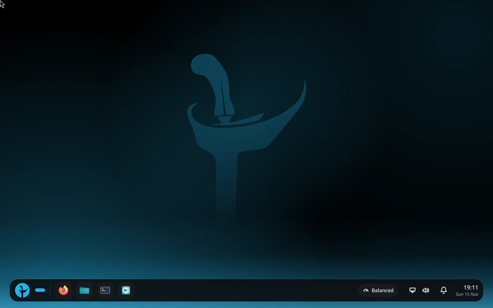
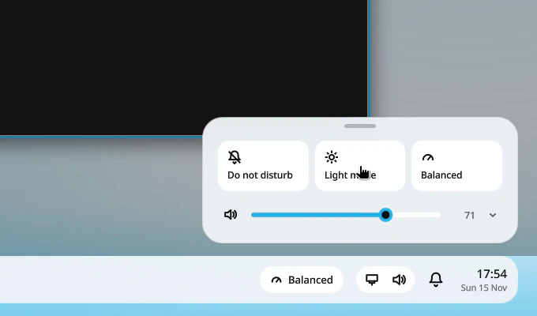

One bar.
Everything in reach.
The default KrissOS desktop: a taskbar, a launcher you type into, notifications, quick settings and a lock screen. Your Windows shortcuts work from day one.

Every picture on this page is a screenshot of the shell running in a VM.
One bar at the bottom.
The launcher button, your pinned and open apps, the power profile, the tray, volume, notifications and the clock. Right-click an app to pin it, drag a pinned app to move it.

Press Windows and type.
Apps and actions are ranked as you type. Arrow keys move, Enter opens. The Menu key or Shift+F10 opens the selected app's menu.

A stack, not a pile.
New notifications stack above the bar, newest on top and the rest tucked behind. The bell keeps a count. Do not disturb holds them back.

Windows+A for the toggles.
A sheet slides up from the bar: Do not disturb, dark or light mode, the power profile, and volume with its output picker. Drag it down or press Escape to close it.

The same calm face, twice.
The lock screen takes typing straight away, no click needed. The login screen looks the same, with other users at the bottom left and the desktop to start at the bottom right.


Obsidian or daylight.
Switch in quick settings. The bar, sheets and wallpaper follow, and Sky Cyan stays the one accent in both.


Prefer a Mac?
An optional Mac layout is on the way: a top bar, a centred dock and window buttons on the left, in the same KrissOS look.
The keys you already know.
Set up on your first login. Keys you have already changed are left alone.
- WindowsOpen the launcher
- Windows+LLock
- Windows+AQuick settings
- Windows+NNotifications
- Windows+DShow the desktop; again to bring the windows back
- Windows+EFiles
- Windows+← / Windows+→Snap the window to that half
- Windows+↑ / Windows+↓Maximize or minimize
- Windows+1…9Go to that workspace
- Print ScreenScreenshot of everything, to Pictures and the clipboard
- Windows+Shift+SScreenshot of a dragged region
- Alt+Tab / Alt+F4Switch windows, close a window
Boot it in a VM tonight.
The live ISO logs straight into the KrissOS Shell. Turn animations off in your settings and every transition becomes instant.